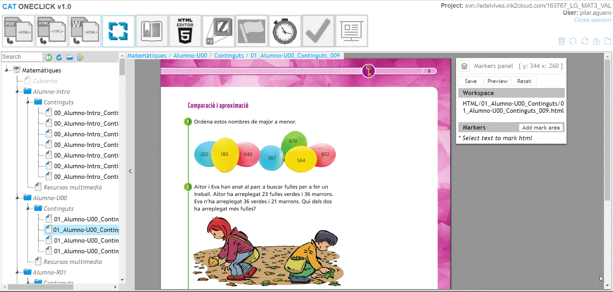

La herramienta HTML to XML (Manifest) del CAT permite generar el manifiesto de un libro. Dicho archivo es el que contiene los datos específicos de cada uno de los libros que permiten su inclusión en la plataforma digital.
Para poder logarse en el CAT es necesario disponer de:

Antes de utilizar la herramienta propiamente dicha, es necesario haber realizado el proceso de PDF to HTML explicado en el manual anterior.
Lo primero que se debe hacer al entrar al CAT es asegurarnos que el proyecto está perfectamente updateado:
Al igual que en el caso de la herramienta anterior, se trata de una operación sumamente importante, ya que, una vez montado el libro, realizar cambios a este respecto, supone en muchas ocasiones tener que iniciar todo el proceso desde cero.
Para comenzar a utilizar la herramienta objeto de este manual. Identificamos y pulsamos su botón de acceso:
Se iniciará el proceso de sincronización del CAT con el repositorio, y nos mostrará en pantalla todas las carpetas que contenga la carpeta HTML del repositorio.
En el ejemplo que nos ocupa, serán las correspondientes a las unidades del libro del alumno tal y como los habíamos preparado previamente:
Seleccionamos en el menú de la izquierda cada una de las carpetas que queremos incluir, en el orden que deben llevar para el correcto montaje del libro, arrastrándolas hacia la parte derecha en la zona indicada como libro del alumno (el montaje del libro del profesor será objeto de un posterior manual de uso):
Una vez que hemos arrastrado todas, pulsamos el botón generar y esperamos hasta que la herramienta nos indique que el proceso ha finalizado:
Pulsamos aceptar y updateamos el repositorio.
Verificamos que en la carpeta dummie\MANIFIESTOS se nos ha creado el archivo:
imsmanifest.xml
Hacemos copia del mismo, lo pegamos en la carpeta raíz del repositorio y comiteamos:
Es necesario comprobar que el manifiesto que se ha generado es correcto, verificando que cada una de las paginas del libro están perfectamente numeradas.
Para ello, volvemos al cat, updateando de nuevo el proyecto. Necesitamos verificar en la pantalla que se nos abre que se ha añadido el archivo imsmanifest.xml en la carpeta raíz del repositorio:
Ahora pulsamos una nueva herramienta del cat: Makers Editor
Se nos abrirá una pantalla, en la que veremos en el menú de la izq. (en adelante TOC) todas y cada una de las pág. del libro, separadas en tantas unidades como hallamos creado en los pasos previos:
En este punto, es importante comprobar que todas y cada una de las pág. tienen su numeración correcta, pulsando cada una de ellas en el TOC y verificando que tanto su nombre como el que aparece en la ventana de makers panel tienen como numeración final el mismo que el que le corresponde a la pág. (siempre serán 3 dígitos):
Si encontráramos erratas de paginación, habrá que repetir el proceso desde el paso de PDF to HTML hasta conseguir un manifiesto base correcto. No se debe pasar al siguiente paso, sin asegurarse que la paginación es perfecta ya que, de lo contrario, produciría un defecto en la database que impedirá el correcto funcionamiento del libro incluso una vez terminado y publicado.
Si se trata de un libro de los denominados “Only Book” el proceso habría concluido, pero si se trata de un libro que va a contener otros módulos como actividades, multimedia, etc., debemos proceder al siguiente paso.
Para generar el resto de los módulos que puede contener un libro, necesitamos utilizar un script incluido en la propia herramienta que nos modificará el manifiesto y dará lugar a la inclusión de estos. Siempre será la editorial la que nos debe indicar si se incluyen módulos en el libro, por tanto, no debe realizarse este paso si no se ha verificado que el proyecto debe incluirlos.
En el caso de que estemos con un proyecto que contenga módulos (es decir, no es “Only Book”) por defecto incluiremos todos los módulos, aunque será la editorial, la que nuevamente nos indique los módulos que van a estar activos en cada uno de los proyectos Esta operación de activar o desactivar los módulos, será objeto de un manual posterior. Por el momento vamos a generar la totalidad de los módulos.
Para ello pulsamos en el script (denominado coloquialmente como “rayo”)

En la ventana que nos aparece seleccionamos la opción “Manifiesto Virgen”:
A continuación “Generar todo”:
Pulsamos modificar, esperamos al mensaje inferior izquierdo de que se ha producido el comit, cerramos la pantalla existente, y refrescamos el TOC:
Updateamos el repositorio verificando que se hayan guardado los cambios en el archivo imsmanifest.xml de la carpeta raíz (el de la carpeta dummie\MANIFIESTOS no ha sufrido cambios en este proceso)
Una vez hemos realizado todos estos procesos, ya tenemos preparado el contenido inicial del libro, para poder proceder a la organización de las paginas, renombrado de las mismas, así como la inclusión de todo el material interactivo que se mostrará en la plataforma (actividades, multimedia, etc.)